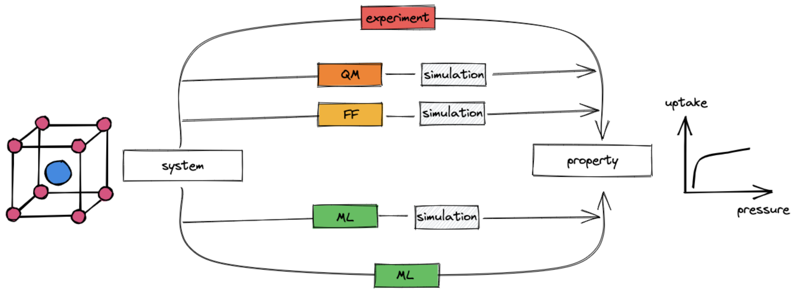
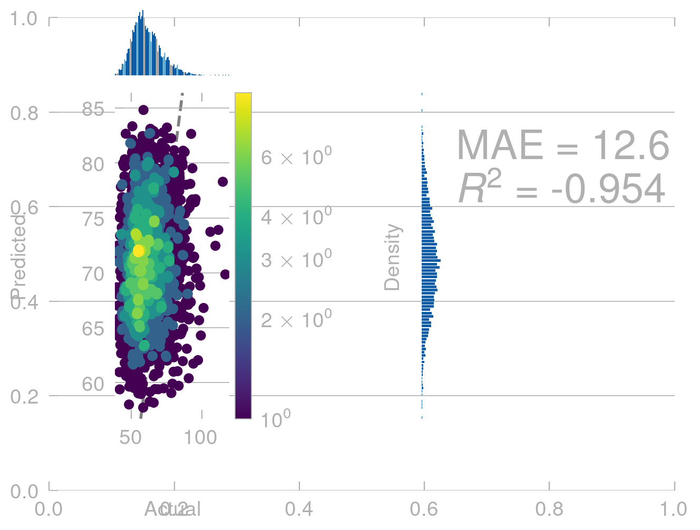
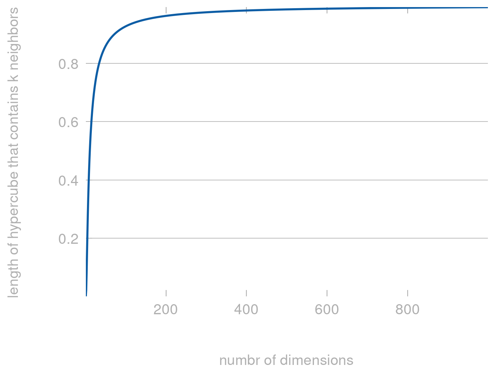

To design new materials, we need to know their properties. There are two main routes to get the properties of a material:
Perform an experiment to measure them
Perform a simulation to “measure” them in silico
In many cases, performing an experiment is time-consuming and, hence, expensive. Also high-fidelity simulations can be very costly.
Fidelity expresses the exactness with which a surrogate represents the truth. In the context of ML you might also see the term multi-fidelity, which means that the approach uses multiple approximations with different levels of fidelity, e.g. density-functional theory and coupled cluster theory
Therefore, there is a need for methods that can help us to predict the properties of materials with high fidelity and low cost. In this lecture, we will see that supervised machine learning (ML) is a powerful tool to achieve this goal.
Interestingly, this tool can be used in many different ways.
Where does ML fit in the design process?
Machine learning can be used in multiple ways to make high-fidelity predictions of materials less expensive.
Note that reducing the cost has been a challenge for chemists and material scientists for a long time. Dirac famously said “The fundamental laws necessary for the mathematical treatment of a large part of physics and the whole of chemistry are thus completely known, and the difficulty lies only in the fact that application of these laws leads to equations that are too complex to be solved. […] approximate practical methods of applying quantum mechanics should be developed, which can lead to an explanation of the main features of complex atomic systems without too much computation”

Machine learning (green boxes) can be used at multiple places in the material design process.
Replace expensive evaluation of the potential energy surface \(U(\mathbf{X}, \{\mathbf{Z}\})\): Quantum chemistry as a field is concerned with the prediction of the potential energy surface \(U(\mathbf{X}, \{\mathbf{Z}\})\) of a system of atoms of types \(\mathbf{Z}\) at positions \(\mathbf{X}\). Quantum chemists have developed different approximations to this problem. However, since they are all kinds of functions that map positions of atoms (and atom types, and in some cases electron densities/coordinates) to energies, we can learn those functions with ML.
Note that once we have done that, we generally still need to perform simulations to extract the properties of interest (e.g. as ensemble averages).
Directly predict the properties of interest Instead of computing the properties of interest using a molecular simulations, we can build models that learn the \(f(\mathrm{structure}) \to \mathrm{property}\) mapping directly. The basis for this mapping might be experimental data or high-fidelity computational data.
Also about this approach, there are many review articles. I also wrote one, focussing on porous materials.
Note that in the context of using ML for molecular simulations, it can also be used to address sampling problems. We will not cover this in detail in this lecture. For a good introduction, see the seminal paper by Noe and a piece about it by Tuckerman.
Supervised ML workflow
The supervised ML workflow.
For the main part of this lecture, we will assume that we use models that consume so-called tabular data, i.e. data that is stored in a table (feature matrix \(\mathbf{X}\) and target/label vector/matrix \(\mathbf{Y}\)), where each row corresponds to a material and each of the \(p\) columns corresponds to a so-called feature. We wil later see that this is not the only way to use ML for materials science, but it is the most common one. We will also explore in more detail how we obtain the features.
We will use some data \(\mathcal{D} = \{(\mathbf{x}_i, y_i)\}_{i=1}^N\) to train a model \(f(\mathbf{x}) \to y\) that can predict the target \(y\) for a new structure described with the feature vector \(\mathbf{x}^*\).
To understand what it takes to feed structures into ML models, let us try to build a very simple force field. To make things simple and fast, we will just attempt to predict the energies of different conformers of the same molecule.
We will create some data using RDkit and then use scikit-learn to train a model.
Generating data
import matplotlib.pyplot as pltimport numpy as npimport pandas as pdfrom pymatviz.parity import density_scatter_with_histfrom rdkit import Chemfrom rdkit.Chem import AllChem, PyMolfrom sklearn.ensemble import RandomForestRegressorfrom sklearn.model_selection import train_test_splitimport matplotxplt.style.use(['science', 'nature', matplotx.styles.dufte])def gen_conformers(mol, numConfs=10_000, maxAttempts=1000, pruneRmsThresh=0.2, useExpTorsionAnglePrefs=True, useBasicKnowledge=True, enforceChirality=True):"""Use RDkit to generate conformers for a molecule.""" ids = AllChem.EmbedMultipleConfs(mol, numConfs=numConfs, maxAttempts=maxAttempts, pruneRmsThresh=pruneRmsThresh, useExpTorsionAnglePrefs=useExpTorsionAnglePrefs, useBasicKnowledge=useBasicKnowledge, enforceChirality=enforceChirality, numThreads=0)returnlist(ids)def calc_energy(mol, conformer_id, iterations=0):"""Calculate the energy of a conformer using the Merck Molecular Force Field.""" ff = AllChem.MMFFGetMoleculeForceField(mol, AllChem.MMFFGetMoleculeProperties(mol), confId=conformer_id) ff.Initialize() ff.CalcEnergy() results = {}if iterations >0: results["converged"] = ff.Minimize(maxIts=iterations) results["energy_abs"] = ff.CalcEnergy()return results# create a moleculemol = Chem.AddHs(Chem.MolFromSmiles('CC(CCC)CC(C)(CCCC)O'))# visualize some conformers using PyMolconformer_ids = gen_conformers(mol)v= PyMol.MolViewer()v.DeleteAll()for cid in conformer_ids[:50]: v.ShowMol(mol,confId=cid,name='Conf-%d'%cid,showOnly=False)v.server.do('set grid_mode, on')v.server.do('ray')v.GetPNG()
For those conformers, we can now retrieve the positions and energies and save them in a pandas dataframe.
# make column namescoordinate_names =sum([[f'x_{n}',f'y_{n}', f'z_{n}'] for n inrange(mol.GetNumAtoms())], []) # make a dataframedata = []for conformer_id in conformer_ids: energy = calc_energy(mol, conformer_id)['energy_abs'] positions = mol.GetConformer(conformer_id).GetPositions().flatten() position_dict =dict(zip(coordinate_names, positions)) position_dict['energy'] = energy data.append(position_dict)data = pd.DataFrame(data).sample(len(data))data
x_0
y_0
z_0
x_1
y_1
z_1
x_2
y_2
z_2
x_3
...
x_36
y_36
z_36
x_37
y_37
z_37
x_38
y_38
z_38
energy
2350
2.082377
-2.384621
-0.886825
1.878611
-1.063902
-0.149281
3.062111
-0.226795
-0.498702
3.164710
...
-4.783486
2.805272
0.453616
-3.121490
3.344990
0.081068
-1.268761
-3.134410
-0.056116
50.527359
1031
2.077103
-1.521307
-1.978108
1.380593
-0.800183
-0.726914
2.472656
-0.385603
0.144759
2.231073
...
-4.911553
-0.809955
1.899992
-3.547584
0.108867
2.562697
0.556878
2.723737
-0.847688
61.708833
2043
-1.562612
-2.510985
-1.091513
-1.538347
-1.446391
0.001791
-2.874616
-0.790099
-0.074631
-3.214859
...
3.185514
2.119784
-2.037756
3.116718
3.713313
-1.258657
1.010212
-1.434941
-2.027757
54.934918
488
-2.622666
-0.984364
-1.736397
-1.552771
-0.325951
-0.876648
-2.211194
0.177802
0.351123
-3.280326
...
4.928752
1.771672
-1.560194
3.312213
1.208019
-2.103907
0.947618
-1.027059
2.062733
46.566148
3182
-2.622062
-1.702202
-0.649370
-1.699629
-0.442711
-0.448595
-2.041035
0.022269
0.917023
-3.557981
...
4.663731
-0.690552
1.900821
5.054191
-1.298227
0.261869
1.695958
-1.012533
-2.171839
58.263424
...
...
...
...
...
...
...
...
...
...
...
...
...
...
...
...
...
...
...
...
...
...
1695
1.545078
-1.676186
-0.579824
1.733232
-0.758289
0.569323
2.313415
0.545339
0.010601
3.660710
...
-4.968294
-0.564927
-1.690845
-5.102694
1.251015
-1.373149
-1.049935
0.839526
2.870953
65.543487
895
-2.078717
2.181547
1.377408
-1.922400
0.699183
1.110325
-2.860042
0.256573
0.041219
-2.749035
...
3.568744
-2.309582
0.450033
3.535776
-1.985371
-1.363970
1.251191
2.215607
1.256163
53.297442
433
2.872947
-1.275055
1.324504
1.803448
-1.107335
0.204128
2.282703
0.009835
-0.633029
2.427814
...
-4.479378
0.508470
1.416176
-4.317413
2.044153
0.469898
-1.669397
-2.149311
1.292007
54.034508
1870
2.664259
2.034236
0.575131
1.761238
0.833087
0.858491
2.505428
-0.422292
0.967442
3.344749
...
-5.091052
-1.406824
0.155182
-6.283711
-0.587390
-0.984725
-1.040008
0.992988
1.719511
66.927399
1366
-2.664309
-0.816584
-1.457318
-1.533768
-0.292689
-0.538467
-2.304004
0.230210
0.679246
-3.268371
...
3.204639
2.086104
-1.194536
2.268599
2.114207
0.313189
0.522256
0.077753
2.072437
56.919313
3214 rows × 118 columns
Given this data, we can build a model. We will use a gradient boosting regressor from scikit-learn. We will also split the data into a training and a test set. In later sections, we will see why this is important. But for now, let us us just appreciate that a test set—conformers we did not train on—will give us a measure of how well our model will perform on new, unseen, conformers.
positions = data[coordinate_names] # Xenergies = data['energy'] # y# split into training and test settrain_points =3000train_positions = positions[:train_points]test_positions = positions[train_points:]train_energies = energies[:train_points]test_energies = energies[train_points:]# train a modelfrom sklearn.ensemble import HistGradientBoostingRegressormodel = HistGradientBoostingRegressor()model.fit(train_positions, train_energies)
HistGradientBoostingRegressor()
In a Jupyter environment, please rerun this cell to show the HTML representation or trust the notebook. On GitHub, the HTML representation is unable to render, please try loading this page with nbviewer.org.
HistGradientBoostingRegressor()
Once we have trained a model, we can use it to predict the energies of new conformers. Let’s first see how well it does on the data it was trained on.
From physics we know that (without external field) the energy of a molecule does not depend on where in space it is. That is, if we translate a molecule along \([1, 1, 1]\), the energy should not change.
# translate the molecule along [1, 1, 1]translated_positions = train_positions +1translated_predictions = model.predict(translated_positions)density_scatter_with_hist(train_energies.values, translated_predictions)
<Axes: xlabel='Actual', ylabel='Predicted'>

This is not what we expect. Our model shows completly unphysical behavior and predicts a different energy for the same conformers in different positions in space.
To fix this, and related problems, we need to use a more elaborate approach to building a model.
Mmaking predictions invariant/equivariant to transformations
Invariance and equivariance are terms that have become very relevant in ML. It is always important to mention with respect to what operation something is invariant and equivariant; if people don’t mention this they often refer to the symmetry operations of the Euclidean group which comprises all translations, rotations, and reflection. Invariant means that the property of interest does not change under those operations. Equivariant means that it changes in the same way. The energy, for example, is invariant and the forces are equivariant.
What are symmetries we would like to respect?
Before we can talk about how to build a model that respects symmetries, we need to know what symmetries we would like to respect.
In the case of molecules, we would like to respect the following symmetries:
translation: that is, if we move a molecule along a vector, the energy should not change (see above)
rotation: that is, if we rotate a molecule, the energy should not change
permutation of atoms: that is the order with which we put the atoms in the model does not matter
For crystals, we additionally need to respect periodicity. That is, for intensive properties, there should be no difference between using a unit cell or a super cell of that unit cell as input for a model.
Broadly speaking, there are three different ways to build models that respect symmetries.
Data augmentation: This is the most straightforward approach. We can generate new data points by applying the symmetries to the existing data points. For example, we can generate new conformers by rotating the existing conformers. This approach is very simple to implement, but it can be very expensive. For example, if we want to generate new conformers by rotating the existing conformers, we need to generate a new conformer for every rotation. This approach is often used for computer vision pipelines in which you might want to detect a cat in an image independent of the orientation. In this case, you can generate new images by rotating the existing images.
Features that are invariant/equivariant : This approach is more sophisticated. We can build features that are invariant/equivariant to the symmetries we want to respect. For example, we can build features that are invariant to rotation. In the case of force field such features are bond lengths and angles. This is approach is widely used in ML for chemistry and materials science.
Models that are invariant/equivariant: Alternatively, one can build special models that can consume point clouds as inputs and are equivariant to the symmetries we want to respect. We will not discuss this in detail, but you can find starting points in this perspective by Tess Smidt.
Invariant/equivariant features
Symmetry functions
Fingerprints
Correlation functions
Symmetry functions
Cheaper computations
Training a model
How to know if a model is good?
Before we can proceed to building models, we need to estabilsh a way to measure how good a model is.
Interestingly, this is not as trivial as it may sound. To realize this, it is useful to formally write down what we mean by a good model.
Empirical risk minimization
Let’s assume we have some input space \(\mathcal{X}\) and some output space \(\mathcal{Y}\). We can think of \(\mathcal{X}\) as the space of all possible inputs and \(\mathcal{Y}\) as the space of all possible outputs. For example, \(\mathcal{X}\) could be the space of all possible molecules and \(\mathcal{Y}\) could be the space of all possible energies. We want to learn a function \(f: \mathcal{X} \rightarrow \mathcal{Y}\) that maps inputs to outputs. We can think of \(f\) as a model that we want to train.
To build this models we have samples of the joint distribution \(p(x, y)\), where \(x\) is an input and \(y\) is the corresponding output. We can think of this as a set of data points \(\{(x_1, y_1), (x_2, y_2), \dots, (x_n, y_n)\}\).
If we now define a loss function \(L\) we can compute the risk, which is the expected value of the loss function:
In practice we cannot compute this. The reason is that we do not have access to the joint distribution \(p(x, y)\), but only to a finite set of samples \(\{(x_1, y_1), (x_2, y_2), \dots, (x_n, y_n)\}\).
Linear regression
import jax.numpy as jnpdef linear_regression(x, w, b):return jnp.dot(x, w) + b
Kernel-based machine learning can be thought of expressing the property of interest via an expansion in a basis spanned by the structures in the training set. Figure taken from M. A. Caro, Arkhimedes2018, 3, 21.
Feature importance
Permutation feature importance
Feature selection
Curse of dimensionality
For understanding the curse of dimensionality, it is useful to consider a very simple ML model, the \(k\)-nearest neighbors model. In this model, we have a set of training points \(\{(x_1, y_1), (x_2, y_2), \dots, (x_n, y_n)\}\), where \(x_i\) is a vector of features and \(y_i\) is the corresponding label. To make a prediction, we compute the distance between the input and all training points and return the mode of the labels of the \(k\) closest training points.
Clearly, in this algorithm it is important to find the nearest neighbor. In general, this is important in many algorithms, for instance also in kernel-based learning.
Let’s now ask ourself what part of the space we need to find the nearest neighbors.
For this, let’s start considering a unit cube \([0,1]^d\) and \(n\) data points \(x_i\) sampled uniformly from this cube.
The smallest hypercube that contains \(k\) out of the \(n\) points has the following edge length
If we plot this for different values of \(d\) we get the following plot:
import matplotlib.pyplot as pltimport numpy as np def length(d, k=5, n=10_000):return (k/n)**(1/d)d = np.arange(1, 1000)plt.plot(d, length(d))plt.xlabel('numbr of dimensions')plt.ylabel('length of hypercube that contains k neighbors')
Text(0, 0.5, 'length of hypercube that contains k neighbors')

Clearly, for large \(d\) the length approaches 1—which means that all points are now almost equally far apart and comparing distances no longer makes much sense.
We can also check this by performing a simulation: Generating random \(d\) dimensional points and computing the distance between them. We can then plot the distribution of distances.
Clearly, for large \(d\) the distances are almost the same (the histograms are much more peaked). We can also see this in terms of the coefficient of variation (cv), which is the standard deviation divided by the mean. For large \(d\) the cv is very small, which means that the distances are very similar.